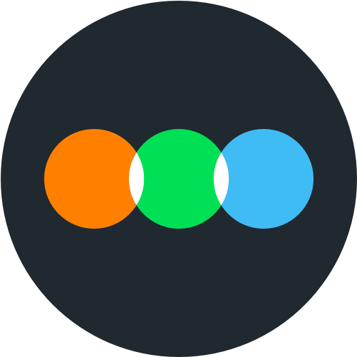

VIT Vellore
Integrated M.Tech in Computer Science and Engineering (Data Science)
2023–2028CGPA: 8.53/10
 SB
SBCS + Data Science student building circular-fashion infrastructure. I’m Co-Founder & COO of Kinsuk, working across applied AI and the systems behind garment reuse.
01 / About
Computer Science · Data Science
I’m Sarang, a Computer Science and Data Science student at VIT Vellore, Co-Founder & COO of Kinsuk, and someone who enjoys turning ideas into working systems.
My work spans applied AI, software development and startup operations. I’m particularly interested in how technology can solve practical problems, whether that’s making garment reuse more traceable or making automated hiring systems fairer.
I like working where technical depth meets real-world execution.
Education
Integrated M.Tech in Computer Science and Engineering (Data Science)
2023–2028CGPA: 8.53/10
Experience
Co-Founder & COO of an AI-powered circular-fashion startup. I work across product development, operations, garment assessment and the systems behind circular reuse.
Software Development Intern, contributing to SubHub, a Django-based subscription management platform for SaaS businesses. I worked across requirements, design, development and testing.
Club President and Assistant Area Director for Public Relations. Earned five area-level contest placements, including multiple first-place finishes.
02 / Startup · Circular fashion
Giving garments a second life requires more than collecting clothes. It requires a system. Kinsuk is an AI-powered circular-fashion startup working to make garment reuse more practical and traceable through collection, identification, condition assessment, and resale or reuse.
What we are building
Developing a distinct identity for collected garments and a way to maintain traceability throughout their journey.
Using computer vision to support garment condition assessment and make intake decisions more consistent.
Developing collection, sorting and routing processes for resale, repair or upcycling.
My role
My work sits at the intersection of technology and execution. I contribute to AI product development while helping build the operational processes needed to collect, assess and route garments. The goal is to make garment reuse more consistent, measurable and scalable.
The ambition is simple: make garment reuse easier to track, assess and scale.
03 / Projects
I build projects to explore specific problems, from computer vision and language processing to assistive systems and backend development. Hover or focus a card for the approach and current result.
How can the condition of a used garment be assessed more consistently?
I developed a transfer-learning classifier using EfficientNetB4 to detect garment defects, exploring how computer vision can support garment assessment in circular-fashion workflows.
96.24% held-out test accuracy · Precision 1.00 · Recall 0.94 · F1-score 0.97
Developed for Kinsuk.
Could irrelevant proxy signals influence automated resume screening?
I’m developing a multi-agent NLP framework to process resumes, evaluate candidates against job descriptions, rank applicants and audit potential bias in Indian hiring contexts. Counterfactual tests examine college tier, names, employment gaps and city tier.
Counterfactual bias auditing across 1,400 resume variants; ongoing research and development.
Misplacing everyday objects can make daily life harder for people living with dementia.
This team project explores an NFC-based assistive system for finding everyday objects through caregiver-configurable profiles. I led system architecture and Android application integration.
Ongoing team project.
Build a practical subscription-management platform for SaaS businesses.
SubHub is a Django-based subscription management platform I contributed to during my Software Development Internship at Beveron Technologies, from requirements and design through development and testing.
Internship project · Beveron Technologies, Dubai.
What can audience reviews reveal about their response to The Odyssey?
I explored audience opinion using approximately 470 cleaned Letterboxd reviews and presented the results in a Streamlit dashboard.
A text-mining analysis of the review dataset.
How might produce be tracked from farms to customers?
This project explores how supply-chain records could improve traceability and make the journey of agricultural products more transparent.
Farm-to-customer tracking concept.
Browse GitHub ↗Exploring fuzzy inference for modelling student performance.
Using genetic algorithms to generate schedules under constraints.
Oracle Cloud Infrastructure
LinkedIn Learning
04 / Hobbies
I enjoy watching films and logging my thoughts on Letterboxd. I’m interested in the stories films tell, the choices filmmakers make, and the different ways audiences interpret what they watch.
That interest found its way into my technical work too: I used Letterboxd reviews as the dataset for an opinion-mining project on The Odyssey. For me, films are also something to think about long after the credits roll.
Find me on Letterboxd ↗
05 / Contact
I’m always interested in meeting people who enjoy building, experimenting and solving real problems. Whether it’s applied AI, circular fashion, a technical project or an idea worth exploring, I’d love to hear from you.
Sarang Brijesh · Built with curiosity and a reason.